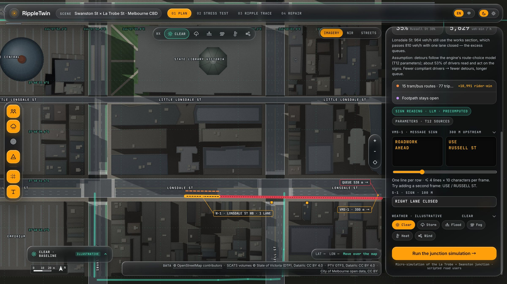
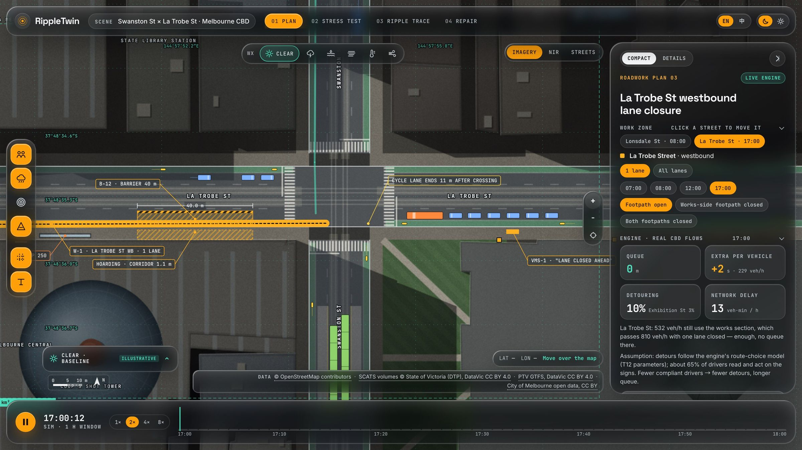
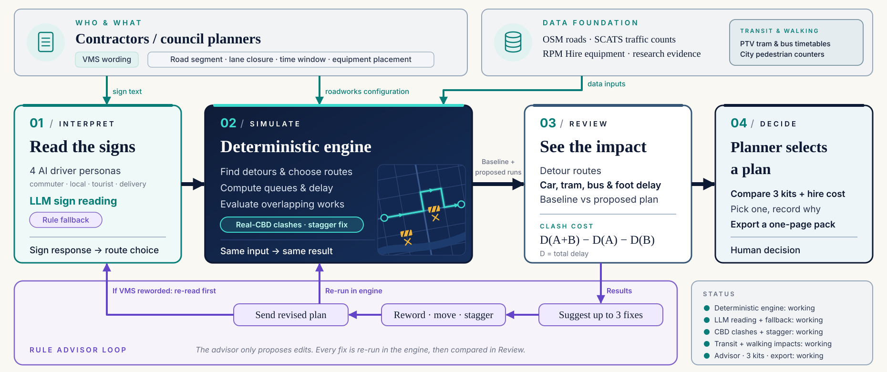
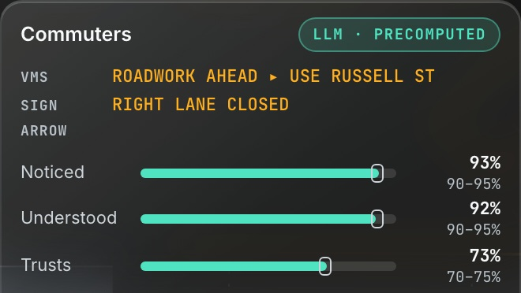
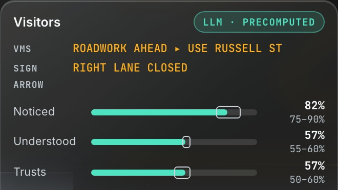
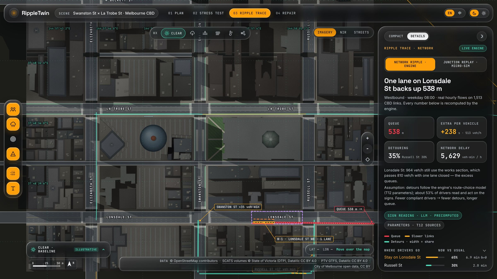
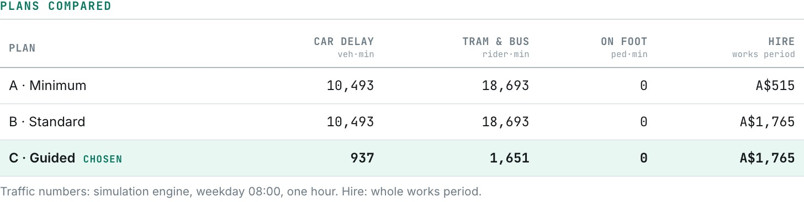

01Configure the site

Set the road, closure and hour. Test your sign wording.
Built and running. Real Melbourne data, simulation and AI driver agents.
Closures disrupt drivers, public transport and pedestrians. Planners need to test the impact, including overlapping works, before deployment.
Commuter / Local / Visitor / Delivery
Four LLM driver agents interpret the same sign differently. Their readings inform the simulation.
AI interprets. The engine calculates.
Helps councils and contractors compare traffic impact and equipment cost before crews arrive on site.
Test a fix. Select a plan. Export an execution pack.

Running junction simulation: vehicles, tram and roadworks on a real map. Movements are illustrative.
AI interprets. The engine calculates.

TECH STACK Python / OSMnx data pipeline, JavaScript simulation and Canvas UI, DeepSeek sign reading, Cloudflare Workers.
DAY 3 MVP An end-to-end planning demo with scenario comparison and export. Remaining: final validation, demo rehearsal and release packaging.
Real product screens. From a road closure to a plan you can act on.

Set the road, closure and hour. Test your sign wording.


Same sign, different responses. Commuter and visitor AI readings.

Trace queues, detours and clashes across real Melbourne roads.

Choose a plan and export it. Impact and hire cost in one view.
¹ Lonsdale St westbound, weekday 08:00, one lane closed. ² Demo works register, 3 overlapping days × 2 peak hours: 27,180 to 0 veh·min. AI cards show precomputed LLM readings, not measured behaviour. Flows include estimates; passenger loads, stock and hire rates include assumptions.
PRODUCT / 03